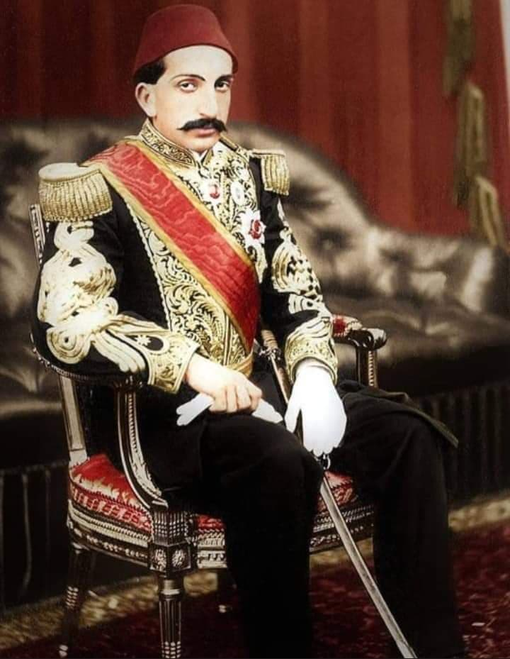

| önceki |  |
sonraki |
II. Abdülhamid (Ulu Hakan), Osmanlı İmparatorluğu'nun otuz dördüncü padişahı ve 99. İslam halifesidir. Babası Sultan Abdülmecid, annesi Tirimüjgân Kadın Sultan'dır; annesinin erken vefatı sebebiyle şefkatli üvey annesi Perestû Valide Sultan tarafından büyütülmüştür. 33 yıl süren çetin saltanatıyla imparatorluğun en buhranlı ve dağılma eşiğindeki döneminde dahi bir diplomasi ve denge siyaseti yürütmüş; eğitim, sağlık, demiryolu ve haberleşme alanlarında cumhuriyet neslini yetiştirecek devasa kurumları inşa etmiştir.
I. Meşrutiyet, Kânûn-ı Esâsî ve 93 Harbi (1877 – 1878)
21 Eylül 1842 tarihinde İstanbul'da doğdu. 31 Ağustos 1876'da tahta geçer geçmez verdiği sözü tutarak 23 Aralık 1876'da Türk ve İslam dünyasının ilk anayasası olan Kânûn-ı Esâsî'yi ilan etti. Meclis-i Mebûsan ve Meclis-i Âyan açılarak meşruti monarşiye geçildi.
Ancak hemen ardından patlak veren felaketli 93 Harbi (1877 – 1878 Osmanlı-Rus Harbi) devleti yıkımın eşiğine getirdi. Plevne'de Gazi Osman Paşa'nın destansı savunmasına ve Kafkas cephesinde Aziziye Tabyası'nda Nene Hatun ve Erzurum halkının kahramanlıklarına rağmen Rus orduları Yeşilköy'e (Ayastefanos) kadar dayandı. Ağır şartlı Ayastefanos Antlaşması, İngiltere'nin devreye girmesiyle 1878 Berlin Antlaşması'na dönüştürüldü:
- Kars, Ardahan ve Batum Rusya'ya bırakıldı; Sırbistan, Karadağ ve Romanya bağımsız oldu; Bulgaristan Prensliği kuruldu.
- Rus tehlikesine karşı İngiltere'nin diplomatik desteğini almak amacıyla Kıbrıs Adası'nın idaresi geçici olarak İngiltere'ye devredildi.
- Meclis'teki gayrimüslim mebusların yıkıcı tutumları ve savaş krizini bahane gösteren II. Abdülhamid, Şubat 1878'de meclisi tatil ederek idareyi Yıldız Sarayı'nda topladı (30 yıllık İstibdat / İdare-i Mutlaka dönemi başladı).
İslam Birliği (İttihâd-ı İslâm) ve Denge Siyaseti
II. Abdülhamid, parçalanmakta olan imparatorluğu bir arada tutmak için Hilafet makamını küresel bir güce dönüştürdü:
- Küresel Hilafet Ağı: Hindistan, Çin, Orta Asya, Sumatra ve Afrika'daki Müslümanlar arasında hilafet nüfuzunu kullanarak sömürgeci İngiltere ve Fransa'ya karşı güçlü bir koz elde etti. Pekin'de Hamidiye Üniversitesi'ni açtırdı.
- Almanya ile İttifak: İngiltere ve Rusya'ya karşı yükselen Almanya İmparatoru II. Wilhelm ile stratejik iş birliği kurdu; Berlin-Bağdat demiryolu imtiyazını Almanlara vererek denge sağladı.
- Filistin ve Siyonizm: Siyonist lider Theodor Herzl'in Osmanlı'nın tüm dış borçlarını ödeme vaadi karşılığında Filistin'de Yahudilere toprak talebini kesin bir dille reddetti ve tarihe kazınan şu cevabı verdi:
"Ben bir karış dahi toprak satmam; zira o topraklar bana değil milletime aittir. Milletim o toprakları kanlarıyla almış ve kanlarıyla sulamıştır. Benim cesedim parçalanabilir, lâkin canlı bir vücuttan bir parça koparılmasına asla izin vermem!" Ardından Filistin topraklarını kendi şahsi mülküne (Hazine-i Hassa) katarak Yahudilere toprak satışını yasakladı.
Büyük İmar, Teknoloji ve Kurumlar
II. Abdülhamid devri modern Türkiye'nin kurumsal omurgasının örüldüğü çağdır:
- Hicaz Demiryolu (1900 – 1908): Şam'dan Medine-i Münevvere'ye kadar uzanan 1464 kilometrelik hat, dış borç alınmadan tamamen dünya Müslümanlarının bağışlarıyla inşa edildi. Medine istasyonuna girerken Hz. Peygamber'in (s.a.v.) ruhaniyeti rahatsız olmasın diye raylara keçe döşettirilmiştir.
- Sağlık ve Sosyal Yardım: 1895'te kimsesizler ve yaşlılar için Darülaceze'yi, kızı Hatice Sultan'ın difteriden vefatı üzerine ilk modern çocuk hastanesi olan Şişli Etfal Hastanesi'ni kurdu. Gülhane Askeri Tıp Akademisi'ni açtı.
- Eğitim Hamlesi: İstanbul Üniversitesi'nin temeli olan Dârülfünûn'u (1900), Mekteb-i Mülkiye, Mekteb-i Hukuk, Sanâyi-i Nefîse Mektebi (Güzel Sanatlar), Yüksek Ticaret Mektebi ve imparatorluğun dört bir yanında yüzlerce mülki ve askeri idadi (lise) açtı. Mustafa Kemal Atatürk ve silah arkadaşları bu mekteplerde yetişti.
- Telgraf ve Saat Kuleleri: İmparatorluğu 30 bin kilometrelik telgraf ağıyla ördü. İzmir, Dolmabahçe ve Anadolu vilayetlerine onlarca anıtsal saat kulesi diktirdi.
- Düyûn-ı Umûmiye (1881): Muharrem Kararnamesi ile dış borçları yapılandırarak devletin mali iflasını yönetilebilir hale getirdi.
II. Meşrutiyet (1908), 31 Mart Vakası ve Tahttan İndirilişi
İttihat ve Terakki Cemiyeti mensubu subayların (Resneli Niyazi, Enver Bey) Rumeli dağlarına çıkması üzerine 24 Temmuz 1908'de II. Meşrutiyet'i ilan etmek zorunda kaldı. 13 Nisan 1909'da (Rumi 31 Mart) meşrutiyete karşı çıkan gerici ayaklanmayı bastırmak için Selanik'ten gelen Hareket Ordusu İstanbul'a girdi.
Kardeş kanı dökülmemesi için orduya ateş açılmasını kesinlikle yasaklayan II. Abdülhamid, 27 Nisan 1909'da Meclis-i Mebûsan kararı ve Elmalılı Hamdi Yazır'ın kaleme aldığı fetva ile 33 yıllık saltanatının ardından tahttan indirildi. Selanik'teki Alatini Köşkü'ne sürgüne gönderildi; 1912 Balkan Harbi sırasında Selanik düşme tehlikesine girince İstanbul'a getirilerek Beylerbeyi Sarayı'na yerleştirildi.
Şahsi Merakları ve Vefatı
Usta bir marangoz olup saraydaki pek çok ahşap sedir ve masayı bizzat kendi elleriyle oymuştur. Polisiye romanlara ve Sherlock Holmes serisine büyük hayranlık duymuştur.
10 Şubat 1918 tarihinde I. Dünya Savaşı felaketinin son aylarında Beylerbeyi Sarayı'nda 75 yaşında kalp yetmezliğinden vefat etti. Cenazesi yüz binlerce İstanbullunun gözyaşları arasında Çemberlitaş'taki Sultan II. Mahmud Türbesi'ne defnedildi.
Ailesi
- Eşleri:
- Nâzikedâ Başkadın
- Safinaz Nurefzun Kadın
- Bedrifelek Kadın (Şehzade Selim Efendi'nin annesi)
- Bidar Kadın (Şehzade Abdülkadir Efendi'nin annesi)
- Dilpesend Kadın
- Mezidimestan Kadın (Şehzade Burhaneddin Efendi'nin annesi)
- Emsalinur Kadın
- Müşfika Kadın (Ayşe Sultan'ın annesi)
- Saliha Naciye Hanım
- Erkek çocukları:
- Şehzade Mehmed Selim Efendi (1870 – 1937)
- Şehzade Mehmed Abdülkadir Efendi (1878 – 1944)
- Şehzade Ahmed Nuri Efendi (1878 – 1944)
- Şehzade Mehmed Burhaneddin Efendi (1885 – 1949)
- Şehzade Abdürrahim Hayri Efendi (1894 – 1952)
- Şehzade Ahmed Nureddin Efendi (1901 – 1944)
- Şehzade Mehmed Abid Efendi (1905 – 1973)
- Kız çocukları:
- Zekiye Sultân (Gazi Osman Paşa'nın oğlu Ali Nureddin Paşa ile evlendi)
- Naime Sultân (Gazi Osman Paşa'nın oğlu Mehmed Kemaleddin Paşa ile evlendi)
- Naile Sultân (Cemal Paşa ile evlendi)
- Şadiye Sultân (Fahir Bey ile evlendi, hatıratı meşhurdur)
- Ayşe Sultân (Damat Mehmed Ali Rauf Bey ile evlendi, meşhur "Babam Sultan Abdülhamid" hatıratının yazarıdır)
- Refia Sultân
- Hatice Sultân
II. Abdülhamid hakkında daha fazla bilgi için buraya tıklayın.